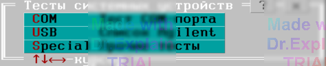
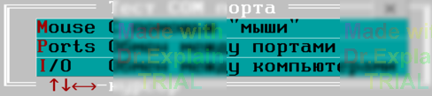

3.14 Тесты системных устройств
Использование: АСК всех серий.
Предоставляется меню (см. рисунок 1).

3.14.1 Тест COM-порта
Тест осуществляет проверку исправности и доступности последовательного порта. Предоставляется меню (см. рисунок 2).

Если у вас есть мышь, подключаемая к последовательному порту, выберите пункт «С помощью "мыши"» и нажмите Enter. Опции появляющегося меню не меняйте (кроме, возможно, номера COM-порта) — они заданы в соответствии со стандартными установками для мыши.
- Подключите мышь к последовательному порту, который используется для связи АСК с ПК.
- Запустите тест и подвигайте мышью.
- При исправности порта и правильном выборе его номера в протокол выполнения будут выводиться коды, принимаемые с мыши.
Если мыши нет, в зависимости от возможностей выберите:
- «Обмен между портами» — если в компьютере несколько последовательных портов;
- «Обмен между компьютерами» — если можно организовать связь между двумя ПК через COM-порт.
Меню организации обмена интуитивно понятно.
3.14.2 Прочие тесты
Предназначены для разработчика ПОАСК.